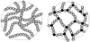

gelation

Definition: In polymer chemistry, gelation (gel transition) is the formation of a gel from a system with polymers. Branched polymers can form links between the chains, which lead to progressively larger polymers. As the linking continues, larger branched polymers are obtained and at a certain extent of the reaction, links between the polymer result in the formation of a single macroscopic molecule. At that point in the reaction, which is defined as gel point, the system loses fluidity and viscosity becomes very large. The onset of gelation, or gel point, is accompanied by a sudden increase in viscosity. This "infinite" sized polymer is called the gel or network, which does not dissolve in the solvent, but can swell in it.
Source: Wikipedia
Wikipedia Page (Something wrong with this association? Let us know.)
Wikidata Page (Something wrong with this association? Let us know.)